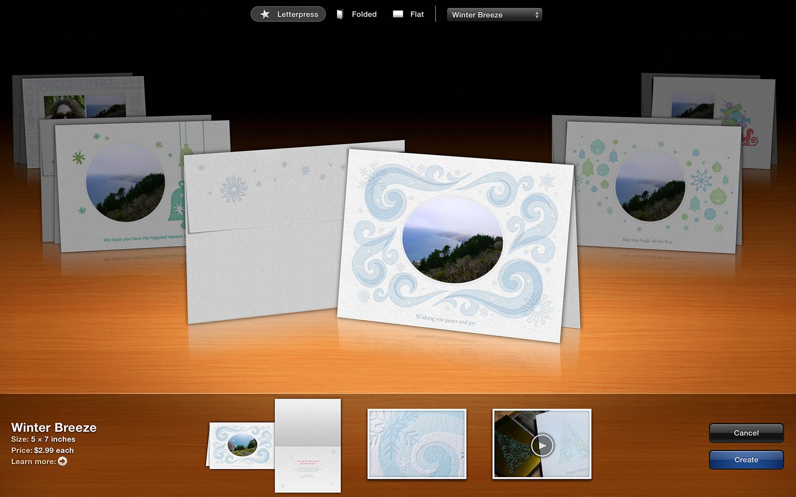

Before the launch of this theme browser in 2013, the print products were hard to find and comprised of a simple drop down menu with static pre-rendered images of our themes. This browser takes advantage of a full-screen experience where the user's photos appear live in each theme preview. It's a totally different experience when you can preview your own photos.
My Role
I was involved in the
initial concept, the
User Experience Design, the
Interaction Design,
spec delivery,
asset creation,
and art direction.
I worked closely with engineering to make sure the shipping build looked and felt right. This was a huge project and took about 14 months from the initial idea to the shipped product.
Cards Theme Browser
We had three different types of cards - letterpress, folded, and flat cards (postcards). The letterpress cards came with a matched envelope and I felt it was important to showcase that.

Watch it in action
Books Theme Browser
Apple shipped three different kinds of books in effectively two sizes. I lined up each carousel for the smoothest transitions possible and the sizes of the books reflect the size they are in real life. When you switch from Extra Large to Large, the ratio adjusts accordingly. I worked with a visual designer to give the appearance of 3D when when in fact we could only work in a 2.5D space.
We incorporated some fun interactions like the paper swatches that lift up on hover and the glow surrounding the color choice.